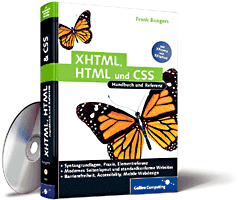

Das clip-Property beschneidet die Ansicht eines absolut positionierten Containers, ohne dessen Abmessungen dabei zu verändern. Es können ausschließlich rechteckige Ausschnitte festgelegt werden.
Werte:
rect([y-top x-re y-bot x-li]), auto, inherit
Wenden
Sie clip auf diesen Container an.
